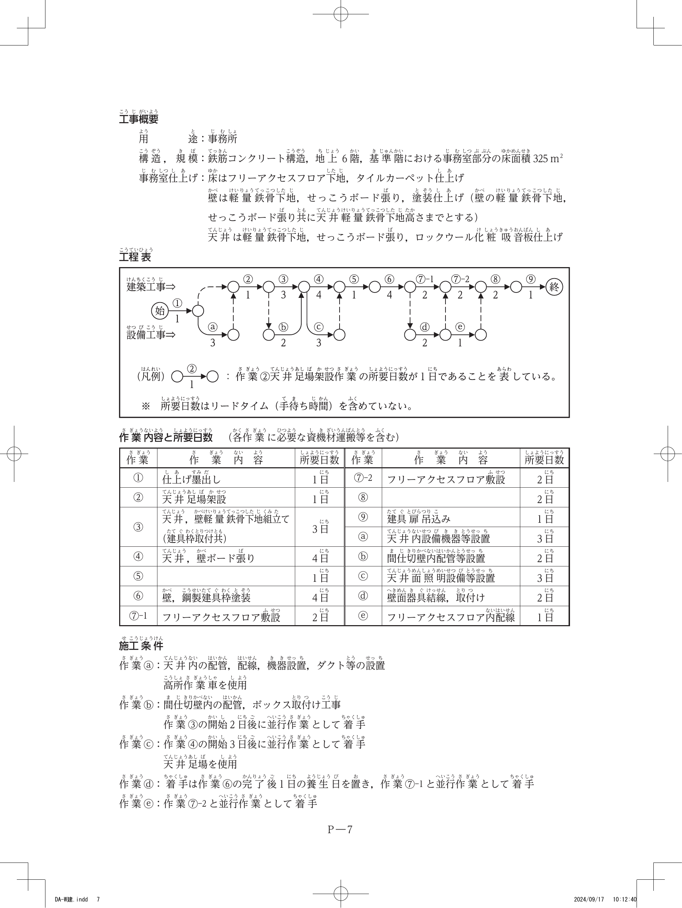

持続可能な建設業を目指して、働き方改革を推進すべく様々な取組が官民一体となって続けられている昨今、建築工事の現場を管理していく上でのあなたの考えについて、次の1．及び2．の問いに答えなさい。
右に示す工事概要の建築工事において、あなたが建設現場における統括的な施工の技術上の管理を求められる立場として、機能・性能等の要求された品質を確保しながら適正、かつ、合理的に進める上で、有効と考える現場作業の軽減策を3つ提案し、それぞれ次の①から③について具体的に記述しなさい。
ただし、3つの提案の②及び③はすべて異なる内容を記述するものとする。
建設業における働き方改革の課題の1つとして、建設現場における時間外労働が挙げられる。右に示す工事概要の建築工事に係わらず、あなたの今日までの経験を踏まえて、建設工事の施工に従事する者の時間外労働の現状に関して、次の①及び②について具体的に記述しなさい。
| 工事名 | 共同住宅新築工事 | 工期 | 2024年1月〜2025年6月 |
|---|---|---|---|
| 主要用途 | 共同住宅 52戸 | 主要構造 | 鉄筋コンクリート構造 地上7階建て |
| 用途地域 | 住居地域／6m道路隣接 | 最高高さ | 23.25m |
| 敷地面積 | 2,350.00 m² | 階高 | 1〜4階 3.3m、5〜7階 3.0m |
| 建築面積 | 758.85 m² | エレベーター | 乗用 8人乗り 1台 |
| 延床面積 | 4,950.60 m² | 根切り深さ | 2.5m（親杭横矢板工法） |
| 鉄筋継手 | 柱・梁主筋：ガス圧接継手 | 地業 | 現場造成杭（アースドリル工法） |
建築工事における次の1．から3．の設備又は機械を安全に使用するための留意事項を、それぞれ2つ具体的に記述しなさい。
市街地での事務所ビル新築工事において、右の工事概要に示す事務所部分の内装工事に関する作業工程について、次の1．から4．の問いに答えなさい。
| 用途 | 事務所 |
|---|---|
| 構造・規模 | 鉄筋コンクリート構造、地上6階、基準階における事務室部分の床面積 325 m² |
| 事務室仕上げ | 床：フリーアクセスフロア下地、タイルカーペット仕上げ 壁：軽量鉄骨下地、せっこうボード張り、塗装仕上げ 天井：軽量鉄骨下地、せっこうボード張り、ロックウール化粧吸音板仕上げ |

| 作業 | 作業内容 | 所要日数 | 作業 | 作業内容 | 所要日数 |
|---|---|---|---|---|---|
| ① | 仕上げ墨出し | 1日 | ⑦-2 | フリーアクセスフロア敷設 | 2日 |
| ② | 天井足場架設 | 1日 | ⑧ | （問1で答える） | 2日 |
| ③ | 天井・壁 軽量鉄骨下地組立（建具枠取付共） | 3日 | ⑨ | 建具扉吊込み | 1日 |
| ④ | 天井・壁ボード張り | 4日 | ⓐ | 天井内設備機器等設置 | 3日 |
| ⑤ | （問1で答える） | 1日 | ⓑ | 間仕切壁内配管等設置 | 2日 |
| ⑥ | 壁、鋼製建具枠塗装 | 4日 | ⓒ | 天井面照明設備等設置 | 3日 |
| ⑦-1 | フリーアクセスフロア敷設 | 2日 | ⓓ | 壁面器具結線、取付け | 2日 |
| ⓔ | フリーアクセスフロア内配線 | 1日 | |||
18日
19日
次の1．から4．の問いに答えなさい。
次の1．から8．の各記述において、□に当てはまる最も適当な語句又は数値の組合せを、下の枠内から1つ選びなさい。
作業場に通ずる場所及び作業場内には、労働者が使用するための安全な通路を設け、かつ、これを常時有効に保持しなければならない。通路で主要なものには、これを保持するため、通路であることを示す表示をしなければならない。
通路には、正常の通行を妨げない程度に、a 又は照明の方法を講じなければならない。ただし、常時通行の用に供しない地下室等で通行する労働者に、適当な照明具を所持させるときは、この限りでない。
また、b に設ける通路は用途に応じた幅を有し、通路面から高さ c m以内に障害物を置いてはならない。
| a | b | c | |
|---|---|---|---|
| ① | 採光 | 屋内 | 2.0 |
| ② | 換気 | 屋外 | 1.8 |
| ③ | 採光 | 屋内 | 1.8 |
| ④ | 換気 | 屋外 | 2.0 |
| ⑤ | 採光 | 屋外 | 1.8 |
| a | b | c | |
|---|---|---|---|
| ① | 採光 | 屋内 | 2.0 |
| ② | 換気 | 屋外 | 1.8 |
| ③ | 採光 | 屋内 | 1.8 |
| ④ | 換気 | 屋外 | 2.0 |
| ⑤ | 採光 | 屋外 | 1.8 |
安衛則第540条 通路の要件。屋内通路の障害物禁止高さ 1.8m以内、採光または照明は頻出数値。
根切り工事において、掘削底面付近の砂質地盤に上向きの浸透流が生じ、この水の浸透力が砂の水中での有効重量より大きくなり、砂粒子が水中で浮遊する状態を a という。
a が発生し、沸騰したような状態でその付近の地盤が破壊する現象を b という。
また、掘削底面やその直下に難透水層があり、その下にある被圧地下水により掘削底面が持ち上がる現象を c という。
| a | b | c | |
|---|---|---|---|
| ① | 地盤沈下 | パイピング | ヒービング |
| ② | クイックサンド | ボイリング | ヒービング |
| ③ | クイックサンド | パイピング | ヒービング |
| ④ | 地盤沈下 | ボイリング | 盤ぶくれ |
| ⑤ | クイックサンド | ボイリング | 盤ぶくれ |
| a | b | c | |
|---|---|---|---|
| ① | 地盤沈下 | パイピング | ヒービング |
| ② | クイックサンド | ボイリング | ヒービング |
| ③ | クイックサンド | パイピング | ヒービング |
| ④ | 地盤沈下 | ボイリング | 盤ぶくれ |
| ⑤ | クイックサンド | ボイリング | 盤ぶくれ |
既製コンクリート杭の埋込み工法において、杭心ずれを低減するためには、掘削ロッドの振止め装置を用いることや、杭心位置から直角二方向に逃げ心を取り、掘削中や杭の建込み時にも逃げ心からの距離を随時確認することが大切である。
一般的な施工精度の管理値は、杭心ずれ量が D/a 以下（Dは杭直径）、かつ、b mm以下、c が 1/100 以内である。
| a | b | c | |
|---|---|---|---|
| ① | 3 | 100 | 鉛直精度 |
| ② | 4 | 100 | 鉛直精度 |
| ③ | 3 | 150 | 水平精度 |
| ④ | 4 | 150 | 鉛直精度 |
| ⑤ | 4 | 100 | 水平精度 |
| a | b | c | |
|---|---|---|---|
| ① | 3 | 100 | 鉛直精度 |
| ② | 4 | 100 | 鉛直精度 |
| ③ | 3 | 150 | 水平精度 |
| ④ | 4 | 150 | 鉛直精度 |
| ⑤ | 4 | 100 | 水平精度 |
杭心ずれは D/4 かつ 100mm以下、鉛直精度 1/100以内が標準管理値。杭の「水平精度」ではなく「鉛直精度」である点を必ず押さえる。
鉄筋工事において、鉄筋相互のあきは a の最大寸法の1.25倍、b mm、及び隣り合う鉄筋の径（呼び名の数値）の平均の1.5倍のうち最大のもの以上とする。
鉄筋の間隔は、鉄筋相互のあきに鉄筋の最大外径を加えたものとする。
柱及び梁の主筋のかぶり厚さは、D29以上の異形鉄筋を使用する場合、径（呼び名の数値）の c 倍以上とする。
| a | b | c | |
|---|---|---|---|
| ① | 細骨材 | 20 | 1.25 |
| ② | 粗骨材 | 20 | 1.5 |
| ③ | 粗骨材 | 25 | 1.25 |
| ④ | 粗骨材 | 25 | 1.5 |
| ⑤ | 細骨材 | 20 | 1.5 |
| a | b | c | |
|---|---|---|---|
| ① | 細骨材 | 20 | 1.25 |
| ② | 粗骨材 | 20 | 1.5 |
| ③ | 粗骨材 | 25 | 1.25 |
| ④ | 粗骨材 | 25 | 1.5 |
| ⑤ | 細骨材 | 20 | 1.5 |
鉄筋相互のあき＝粗骨材最大寸法×1.25、25mm、呼び名平均×1.5 の最大。D29以上の主筋はかぶり厚さ＝呼び名×1.5倍以上。
型枠支保工において、鋼管枠を支柱として用いるものにあっては、鋼管枠と鋼管枠との間に a を設け、支柱の脚部の滑動を防止するための措置として、支柱の脚部の固定及び b の取付け等を行う。
また、パイプサポートを支柱として用いるものにあっては、支柱の高さが c mを超えるときは、高さ2m以内ごとに水平つなぎを2方向に設けなければならない。
| a | b | c | |
|---|---|---|---|
| ① | 中桟 | 布枠 | 3.0 |
| ② | 交差筋かい | 根がらみ | 3.0 |
| ③ | 交差筋かい | 根がらみ | 3.5 |
| ④ | 交差筋かい | 布枠 | 3.5 |
| ⑤ | 中桟 | 布枠 | 3.5 |
| a | b | c | |
|---|---|---|---|
| ① | 中桟 | 布枠 | 3.0 |
| ② | 交差筋かい | 根がらみ | 3.0 |
| ③ | 交差筋かい | 根がらみ | 3.5 |
| ④ | 交差筋かい | 布枠 | 3.5 |
| ⑤ | 中桟 | 布枠 | 3.5 |
鋼管枠支柱 → 枠間に交差筋かい、脚部に根がらみ。パイプサポートは支柱高さ 3.5m超 で2m以内ごとに水平つなぎ2方向。安衛則第242条系の頻出条文。
コンクリートポンプ工法による1日のコンクリートの打込み区画及び a は、建物の規模及び施工時間、レディーミクストコンクリートの供給能力を勘案して定める。
コンクリートの打込み速度は、スランプ18cm程度の場合、打ち込む部位によっても変わるが、20 m³/h から b m³/h が目安となる。
また、スランプ10cmから15cmのコンクリートの場合、公称棒径45mmの棒形振動機1台当たりの締固め能力は、10 m³/h から c m³/h 程度である。
| a | b | c | |
|---|---|---|---|
| ① | 打込み量 | 30 | 15 |
| ② | 打込み順序 | 40 | 20 |
| ③ | 打込み順序 | 30 | 20 |
| ④ | 打込み量 | 40 | 15 |
| ⑤ | 打込み量 | 30 | 20 |
| a | b | c | |
|---|---|---|---|
| ① | 打込み量 | 30 | 15 |
| ② | 打込み順序 | 40 | 20 |
| ③ | 打込み順序 | 30 | 20 |
| ④ | 打込み量 | 40 | 15 |
| ⑤ | 打込み量 | 30 | 20 |
スランプ18cm → 打込み速度 20〜30 m³/h。棒形振動機（φ45mm）1台の締固め能力 10〜15 m³/h。JASS 5 系の暗記定数。
コンクリート工事において、寒中コンクリートでは、レディーミクストコンクリートの荷卸し時のコンクリート温度は、原則として a ℃以上 20℃未満とし、加熱した材料を用いる場合、セメントを投入する直前のミキサ内の骨材及び水の温度は、40℃以下とする。
打込み後のコンクリートは、初期凍害を受けないよう、必要な保温養生を行う。
初期養生の期間は、コンクリートの圧縮強度が b N/mm² が得られるまでとし、この間は、打ち込んだコンクリートのすべての部分が0℃を下回らないようにする。
また、c 養生中は、コンクリートが乾燥しないように散水等で湿潤養生する。
| a | b | c | |
|---|---|---|---|
| ① | 10 | 5 | 断熱 |
| ② | 10 | 5 | 加熱 |
| ③ | 5 | 10 | 加熱 |
| ④ | 5 | 5 | 加熱 |
| ⑤ | 5 | 10 | 断熱 |
| a | b | c | |
|---|---|---|---|
| ① | 10 | 5 | 断熱 |
| ② | 10 | 5 | 加熱 |
| ③ | 5 | 10 | 加熱 |
| ④ | 5 | 5 | 加熱 |
| ⑤ | 5 | 10 | 断熱 |
寒中コンクリートの荷卸し温度 10℃以上20℃未満、初期養生終了は圧縮強度 5N/mm² 到達まで。加熱養生時は乾燥防止のため湿潤養生を併用。
鉄骨の完全溶込み溶接において、突合せ継手の余盛高さの最小値は a mmとする。
裏当て金付きのT継手の余盛高さの最小値は、突き合わせる材の厚さの 1/4 とし、材の厚さが40mmを超える場合は b mmとする。
裏はつりT継手の余盛高さの最小値は、突き合わせる材の厚さの 1/c とし、材の厚さが40mmを超える場合は5mmとする。
| a | b | c | |
|---|---|---|---|
| ① | 0 | 8 | 8 |
| ② | 0 | 8 | 10 |
| ③ | 2 | 10 | 8 |
| ④ | 2 | 8 | 10 |
| ⑤ | 0 | 10 | 8 |
| a | b | c | |
|---|---|---|---|
| ① | 0 | 8 | 8 |
| ② | 0 | 8 | 10 |
| ③ | 2 | 10 | 8 |
| ④ | 2 | 8 | 10 |
| ⑤ | 0 | 10 | 8 |